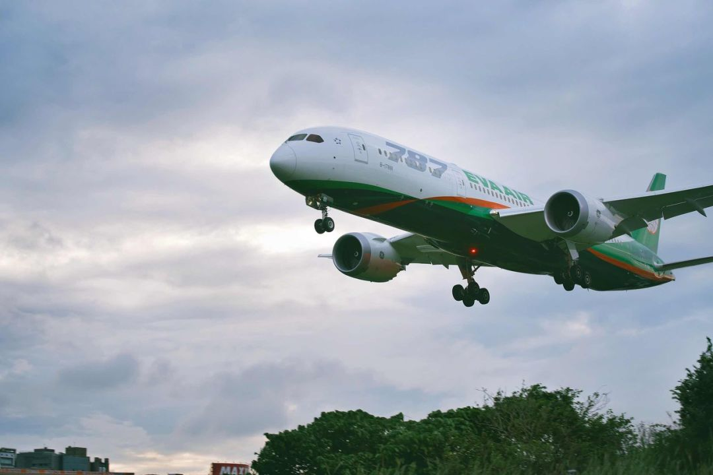

航空公司自救30天
原文链接 备份链接 作者：彭梁洁 来源：*商业人物*（ID：*biz-leaders）* 壹 赵倩最近一次执行飞行任务已经是一个月之前的事儿了。那是大年三十儿，返乡高峰的最后一天，赵倩执飞的737—800型客机搭载了150名乘客，上座率 …

疫情影响下航空客流大幅下滑
航空公司面临较大经营压力


随着疫情在多国蔓延，全球对航空旅行的需求急剧下降，这使很多本就苦苦挣扎的航空公司陷入困境。
3月5日，英国航空公司Flybe宣布破产，成为第一家被疫情拖垮的航企。这家运行了41年的航企运营着英国近五分之二的国内航班，曾是欧洲最大的独立地方性航空公司，每年载客800万人次，运营200多条航线，其破产将使2000多个工作岗位处于危险边缘，也增加了英国境内数十条地区航线的不确定性，是疫情对全球航空运输业造成巨大打击的一个缩影。
在此境况下，近日国内诸多航班机票价格集体跳水，多家航空公司的航线都出现了单程票低至几十元的“白菜价”。
国际航空运输协会发布最新报告显示，新型冠状病毒使航空业损失至少630亿美元的收入，如果该病毒广泛传播到更多国家，则将损失1130亿美元。
经营压力巨大
中国新闻周刊查询携程、去哪儿、飞猪等第三方订票软件，发现“白菜价”机票已持续多日，北京、上海、深圳、广州等城市的出港航班均出现1折左右的机票。比如3月4日，上海飞往重庆的航班最低59元起，仅全价的0.3折，而当日上海飞往长春的航班不含基建燃油附加费最低仅为70元。
据了解，从2月下旬开始，多地机票就跌落100元，比如2月26日，从上海飞重庆票价仅为49元，从上海飞哈尔滨仅需99元，折扣幅度分别为0.3折和0.5折。
这背后反映出航空公司正遭受的巨大经营压力。2月6日，民航局运输司司长于彪在国务院联防联控机制新闻发布会上表示，春节期间航空公司大量削减航班，客座率不足45%，航班总量仅相当于去年的将近一半。携程表示，最近出行的人群中，主要是返程复工的旅客居多，其次为有硬商务出行需求的旅客。
民航业内专家林智杰在接受中国新闻周刊采访时分析，“白菜价”机票频现或与三方面因素有关。首先，随着逐步复工复产，利用票价可引导旅客出行，这是市场复苏的一个表现；其次，客流单向性比较明显，受供需关系影响，成都到上海有五六折的机票，大概八九百块钱，相反上海到成都则只要80元左右；三是中型、小型的公司票价比较便宜，这可能与航司的现金流有一定关系。
“由于客流单向性明显，成都到深圳的回程有客流，该航班要飞，但深圳到成都的去程客流极少，所以只能降价，拉一个是一个。”林智杰向中国新闻周刊表示，从成本回收的角度来讲，旅客走不走对航司来说增量成本是很低的，现阶段只要票价卖到100元以上，出行客流对航司就有贡献。
安信证券指出，疫情影响下航空客流大幅下滑，预计2020年一季度，航空公司将面临较大经营压力，尤其是航空公司背负大量的债务成本及固定成本，现金流压力较大。
民航局数据显示，1月航空客运量同比下降5.3%，对行业影响相对较小；与此同时，2月航空客流量下降幅度大幅攀升，2月18日前的客流量累计下滑86%。目前，春秋航空、南方航空、吉祥航空等6家航空公司已公布2020年1月运营数据，从旅客周转量（按客运人公里计）来看，与去年同期相比，1月仅春秋航空一家上涨，增长7.14%，其余5家均同比下降。
与此同时，一些国际航班价格也跌至冰点。申万宏源证券认为，机场板块受国际旅客与免税收入影响较多，目前韩国、日本等国家确诊人数激增，未来航班难以快速恢复。相比国内航班，国际航班的恢复更为审慎，国际航班与旅客可能出现大幅下降，对机场业绩影响有待进一步观察。
行业格局或将变化
随着一些地区的复工，航空业也在逐渐复苏。
携程表示，从整体预订数据分析发现，2月28日至3月1日，用户的出行总量相比2月25日至27日这3天明显增长。根据数据，从人员输入强度看，近期预计迁入前五的地区分别是广东、上海、浙江、北京、江苏。
据飞猪《疫情后旅行消费信心》调研报告，32%的用户表示不会疫情一结束就立即去旅游，但也有19%的用户选择按原计划出行，更有8%的用户表示增加更多旅行计划。而对于疫情后首次旅行的时间，56%的用户选择了在疫情后3个月之内。
事实上，此前航空业连获两项成本端利好的扶持政策：民航发展基金1月1号起免征，以及阶段性减免企业社保费和实施企业缓缴住房公积金政策。花旗报告表示，若暂免持续半年时间，预计今年上半年将为中国国航、东方航空和南方航空分别带来5.70亿、5.85亿、7.50亿元人民币的资金节约。
3月4日，财政部、民航局发布关于民航运输企业新冠肺炎疫情防控期间资金支持政策的通知。疫情防控期间，中央财政对执飞往返我境内航点（不含港澳台地区）与境外航点间的国际定期客运航班的中外航空公司，以及按照国务院联防联控机制部署执行重大运输飞行任务的航空公司给予资金支持。奖励标准分两档，共飞航班每座公里0.0176元，独飞航班每座公里0.0528元，政策执行期限为1月23日至6月30日。
据华创证券测算，行业国际线平均座收约0.33元，共飞航班补贴相当于座收提升5%，独飞航班补贴相当于提升15%。假设均为共飞航线，国航、南航、东航1月可获补贴1.5亿元至1.7亿元，春秋、吉祥分别获得0.28亿元及0.14亿元，独飞航线则3倍于此。按5个月时间测算，三大航可获得8亿元至9亿元，春秋1.4亿元，吉祥0.7亿元，补贴与实际航班执行量直接相关。
此外，航企结合自身实际情况也积极融资自救。近日，兴业银行广州分行发行10亿超短期融资券驰援南方航空；四川航空超短期融资债券于3月4日发行，发行规模10亿元；春秋航空也发行本金总额不超过50亿元的公司债券，以进一步优化债务结构，拓宽融资渠道，满足资金需求。
华创证券认为，今年行业存在两大不同，其一是波音MAX在国内仍难复飞，预计2019年低基数叠加今年部分需求后移，会致使此后某季度客运量重回两位数，而运力增速或达6%左右，供需4个百分点的缺口带来价格弹性；其二是在疫情冲击下，行业的整体困难或带来行业格局的变化，民航局支持行业内的并购重组。
关于中国民航业的兼并重组，国泰君安指出，国有控股航司是整合主力，中国航司约四分之三为国有控股，大型航司时刻资源较为丰厚。周期下行催化行业整合，深度整合是关键，整合的效果取决于双方的网络协同度、主导航司的战略能力以及安全管控能力等因素。
国泰君安认为，中国航空业集中度仍偏低，中国目前航司数量众多、竞争充分，2018年底共60家航司运营，相对于美国而言，中国民航业盈利能力仍处于较低水平，未上市尤其是地方参股的中小航司盈利能力普遍不佳。但疫情不改长期行业供需向好趋势，以及优质航司内在价值，并可能加速行业集中整合。
千方科技旗下远航通CEO孟涛对媒体坦言，目前航空公司在现金流方面的压力确实很大，且短时间内很难缓解，需要多维度、各个层面的政策支持。此外，疫情可能会导致部分航空公司因经营遇到巨大挑战而面临重组的压力，这也是对整个市场的一次被动优化，促进民航业商业模型的创新升级。
值班编辑：庄梦蕾
推荐阅读
▼


*************点击“阅读原文”了解更多详情*************

原文链接 备份链接 作者：彭梁洁 来源：*商业人物*（ID：*biz-leaders）* 壹 赵倩最近一次执行飞行任务已经是一个月之前的事儿了。那是大年三十儿，返乡高峰的最后一天，赵倩执飞的737—800型客机搭载了150名乘客，上座率 …
原文链接 备份链接 ***********陈亮 王静仪 | 文*********** *************************施智梁 | 编辑************************* 2020年2月21日， 沈阳桃仙国 …
原文链接 备份链接 青岛、威海等城市并未出现传闻中“大批韩国人来华躲避疫情”的现象，但山东各地已经相继采取措施，防止在韩国愈演愈烈的疫情波及山东半岛 文 |《财经》记者 马霖 杨立赟 陈亮 吴琼 编辑 | 余乐 近期新冠疫情在韩国蔓延， …
原文链接 备份链接 医护人员冲锋在一线有需要，我们国企和其他企业就要一起做好后勤保障工作，挑起企业抗击疫情的责任担当，相信众志成城、共克时艰不是一句空话，大家一起努力，疫情终将过去，一切都会好起来。 口述 | 周 道 整理 | 周 洁 小 …
原文链接 备份链接 记者 ：陈晓双 “ 2月15日至23日，客流量将再减半，日均旅客预计不超过20万人次 ” 从1月21日开始，民航局连续四次发布免费退票的政策。据统计，截至目前，中外航空公司共办理退票超过2000万张，票面金额超过200 …